정육쇼케이스
정육쇼케이스 간냉식 직냉식, 진열용과 보관용으로 나눠 고르기
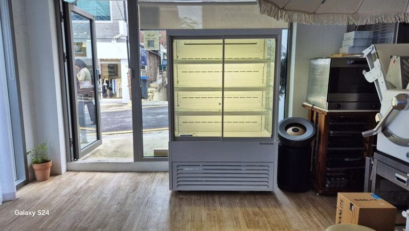
손님에게 보여 주며 문을 자주 여는 정육 진열대는 성에가 없고 온도가 고른 간냉식이, 문을 자주 열지 않고 고기 표면 수분을 지키는 것이 중요한 보조 보관 냉장고는 직냉식이 맞는 경우가 많습니다. 한 매장 안에서도 용도별로 냉각 방식을 나눠 고르는 것이 가장 현실적인 방법입니다.
안녕하세요. 정육점과 식육식당 냉장 설비를 맞춤으로 만드는 한성쇼케이스입니다.
정육쇼케이스를 알아보시다 보면 간냉식, 직냉식이라는 말을 꼭 마주치게 됩니다. 어떤 곳은 고기에는 직냉식이 좋다고 하고, 어떤 곳은 간냉식을 권하니 사장님 입장에서는 헷갈리실 수밖에 없죠.
사실 두 방식은 장단점이 분명히 갈리고, 정육점 안에서도 어떤 설비에 쓰느냐에 따라 답이 달라집니다.
이 차이를 모르고 가격만 보고 골랐다가 여름마다 성에를 녹이느라 영업 중에 전원을 내리는 매장도 적지 않습니다.
오늘은 간냉식과 직냉식이 어떻게 다른지, 그리고 정육점에서는 어떤 설비에 어떤 방식을 쓰면 좋은지 정리해 드리겠습니다.
1. 직냉식: 벽면이 직접 차가워지는 방식
직냉식은 냉장고 안쪽 벽에 증발기가 붙어 있어 벽 자체가 차가워지고, 그 냉기가 자연스럽게 퍼지며 내부를 식힙니다.
팬이 없어 조용하고 구조가 단순해 수리가 쉬운 편입니다.
바람이 불지 않아 내부 습도가 잘 유지되는 것도 장점입니다. 고기 표면이 덜 마르니 덩어리 고기를 잠시 보관하는 용도에는 이 점이 도움이 됩니다.
대신 벽면에 성에가 계속 쌓여 주기적으로 전원을 끄고 녹여야 하고, 위쪽과 아래쪽 온도 차이가 생기기 쉽습니다.
2. 간냉식: 팬으로 냉기를 돌리는 방식
간냉식은 증발기를 따로 분리된 공간에 두고 팬으로 냉기를 순환시켜 내부 전체를 고르게 식힙니다. 자동 제상이 들어 있어 성에를 녹이려고 영업을 멈출 일이 없고, 문을 여닫은 뒤에도 온도가 빨리 돌아옵니다.
정육 진열대에서는 유리에 성에가 끼지 않는다는 점이 특히 중요합니다. 손님이 유리 너머로 부위와 마블링을 보고 고르기 때문입니다.
다만 바람이 계속 돌아 내부가 건조해지기 쉬우니, 썰어 둔 고기는 진열 시간을 짧게 잡거나 포장 진열을 함께 쓰는 것이 좋습니다.
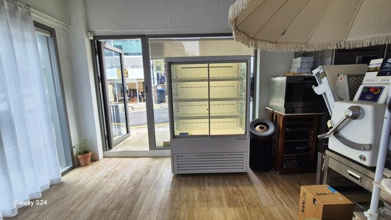
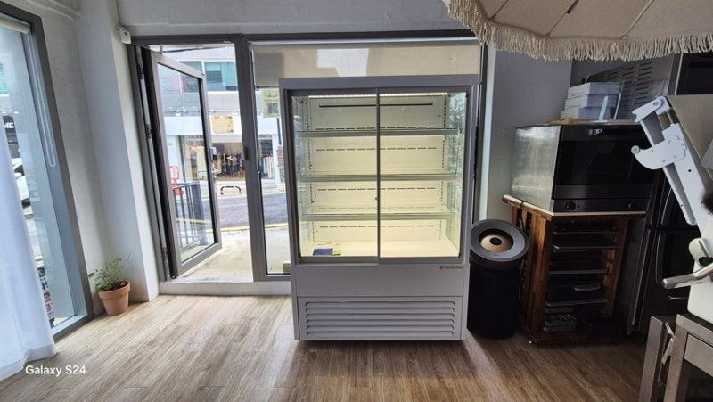
3. 정육점 용도별로 나눠 보기
손님 앞에 놓이는 대면 평대나 셀프 포장육 진열대는 문을 자주 열고 유리 시야가 매출과 연결되므로 간냉식이 잘 맞습니다.
24시간 무인으로 돌아가는 매장이라면 사람이 성에를 녹여 줄 수 없으니 더욱 간냉식 쪽이 편합니다.
작업실 안쪽에서 덩어리 고기를 잠시 두는 보조 냉장고처럼 문을 자주 열지 않는 설비는 직냉식으로도 충분한 경우가 있습니다.
하루 영업을 마치고 여유 있게 제상할 수 있는 환경이라면 관리 부담도 크지 않습니다.
- 대면 평대·셀프 진열대: 간냉식
- 무인 정육점 진열대: 간냉식
- 작업실 보조 보관 냉장고: 직냉식도 검토
4. 고를 때 함께 확인할 것
간냉식은 부품이 많아 수리할 일이 생기면 가까운 곳에서 빠르게 받을 수 있는지가 더 중요해집니다. 전국 240여 개 A/S 센터처럼 지역 대응이 되는지 확인해 보세요.
전기 사용은 일반적으로 직냉식이 조금 유리하다고 알려져 있지만, 성에가 쌓이면 효율이 떨어져 차이가 줄어듭니다.
매장 영업시간과 문 여는 횟수를 함께 놓고 판단하시는 게 정확합니다.
체크리스트
- 진열용인지 보관용인지
- 하루 문 여는 횟수
- 유리 시야가 중요한 자리인지
- 영업 중 제상이 가능한지
- 썬 고기 건조 대책
- 가까운 A/S 센터
현장에서 자주 보는 경우: 냉각 방식을 모르고 골랐다가 여름마다 성에와 씨름할 때
냉장고 교체 상담을 하다 보면 처음에 가격만 보고 골랐다가 매년 여름 같은 문제를 겪는 사장님들을 자주 만납니다.
영업 중에 전원을 내려 성에를 녹이고, 위아래 온도가 맞지 않아 재료 상태를 걱정하다가 결국 몇 년 못 쓰고 다시 바꾸게 되는 경우입니다.
이런 문제는 냉장고 성능이 나빠서라기보다 매장 환경과 맞지 않는 냉각 방식을 골랐기 때문인 경우가 대부분이었습니다.
그래서 교체 상담에서는 먼저 업종과 문 여는 빈도, 보관할 식재료를 확인한 뒤 두 방식을 비교해 안내해 드립니다.
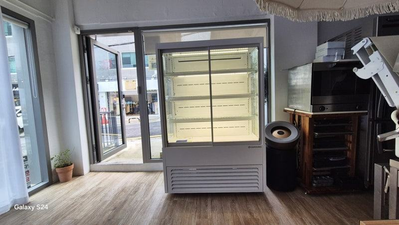
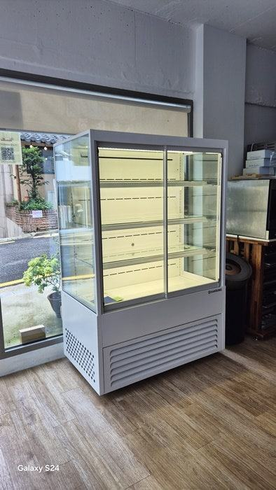
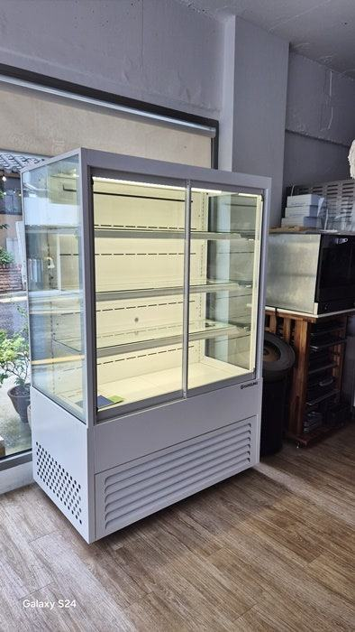
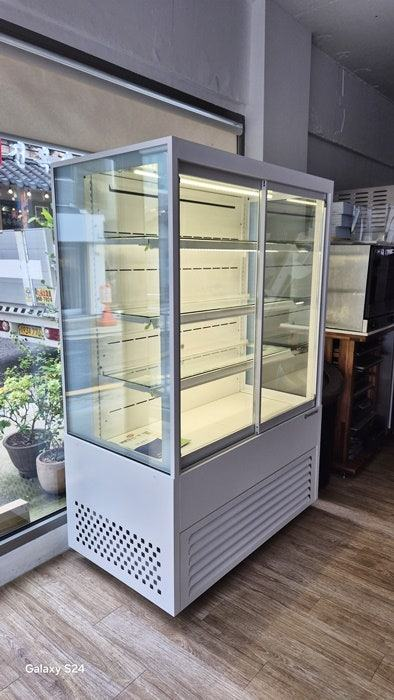
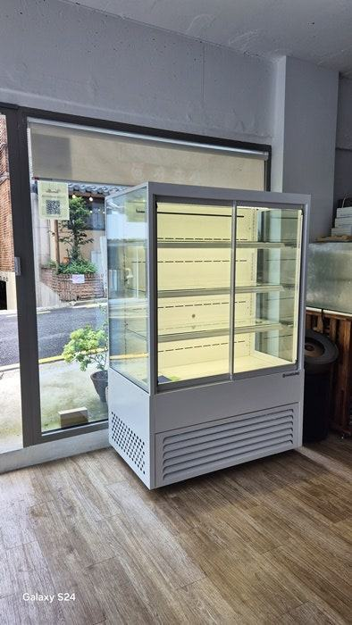
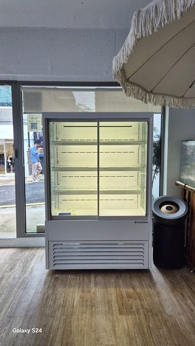
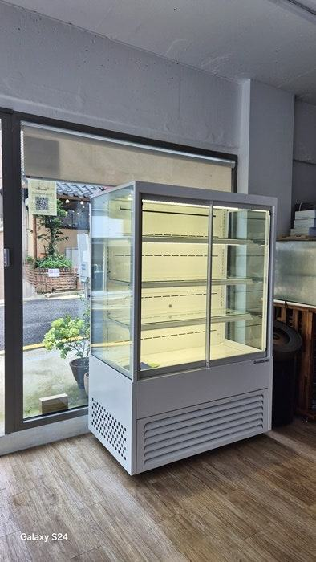
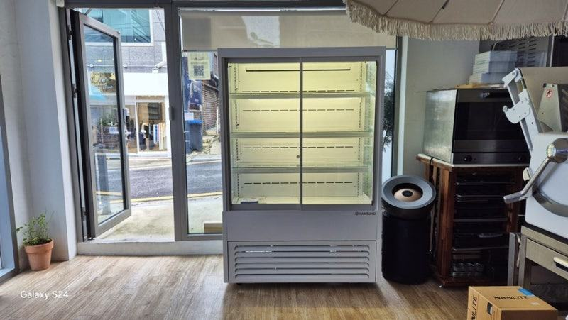
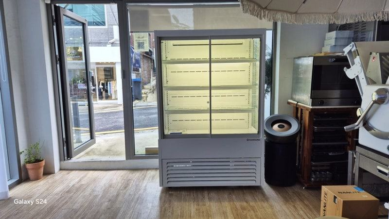
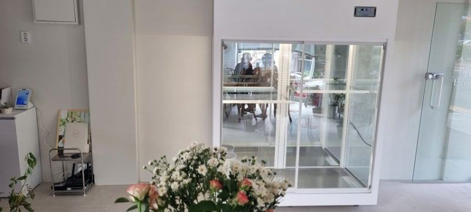
| 비교 항목 | 직냉식 | 간냉식 |
|---|---|---|
| 성에(서리) | 자주 발생, 수동 제상 필요 | 자동 제상, 성에 없음 |
| 온도 균일성 | 위치별 편차 큼 | 내부 전체 균일 |
| 냉각 회복 속도 | 느림 | 빠름 |
| 전기세 | 상대적으로 저렴 | 다소 높음 |
| 유지 관리 | 구조 단순, 수리 쉬움 | 부품 많음, 수리비 높음 |
자주 묻는 질문
간냉식이면 고기가 빨리 마르지 않나요?
바람이 도는 구조라 직냉식보다 건조해지기 쉬운 건 맞습니다. 썬 고기는 진열 시간을 짧게 잡고, 오래 둘 고기는 포장해 진열하거나 보관용 냉장고로 옮기는 방식으로 보완하시면 됩니다.
작은 정육점인데 한 가지 방식으로 통일해도 될까요?
진열대가 하나뿐이라면 손님에게 보이는 자리인 만큼 간냉식을 먼저 권해 드립니다. 보조 냉장고는 사용 빈도와 관리 여유를 보고 따로 정하셔도 됩니다.
직냉식 성에는 얼마나 자주 녹여야 하나요?
문 여는 횟수와 매장 습도에 따라 달라 일정하게 말씀드리기 어렵습니다. 성에가 눈에 띄게 두꺼워져 냉기가 약해지기 전에 영업 후 시간을 정해 제상해 주세요.
매장 조건에 맞춰 만드는 한성쇼케이스
원하시는 제품 사진과 설치할 공간 사진만 보내 주셔도 매장에 맞는 구성을 추천해 드립니다.
- 전국 240여 개 A/S 전담 센터 운영
- 본사 대량 자재 매입으로 품질 대비 합리적인 가격
- 유럽제·삼성 냉각 콤프레셔 적용
- 국내 최초 쇼케이스 전문 디자이너 상주
매장 폭과 원하는 진열 구성을 알려 주세요. 실측과 견적을 안내해 드립니다.
031-986-2458